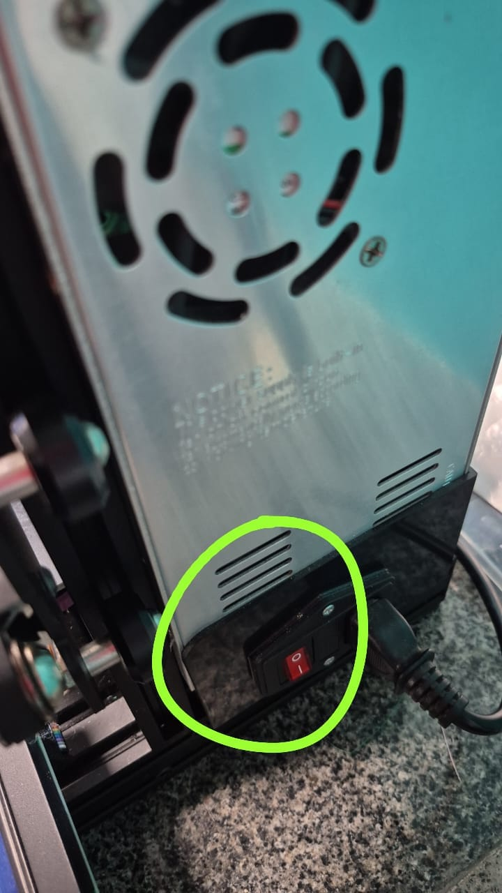
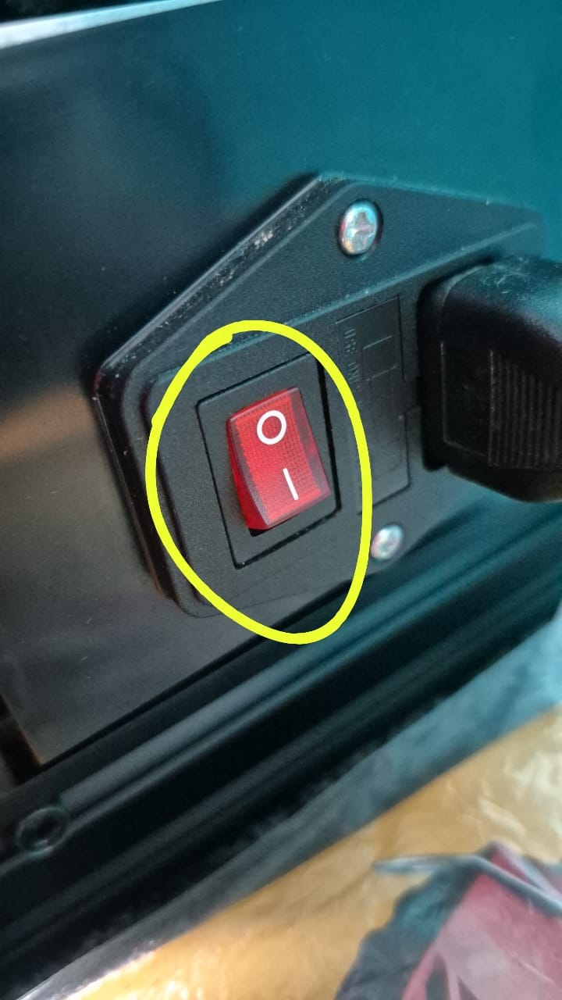
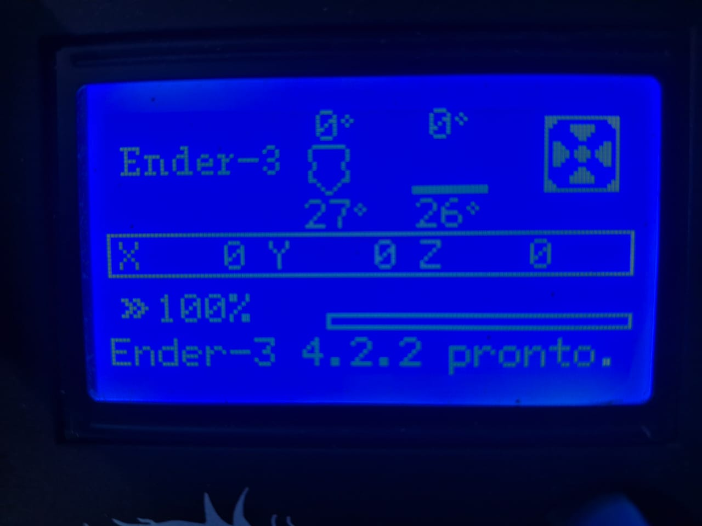
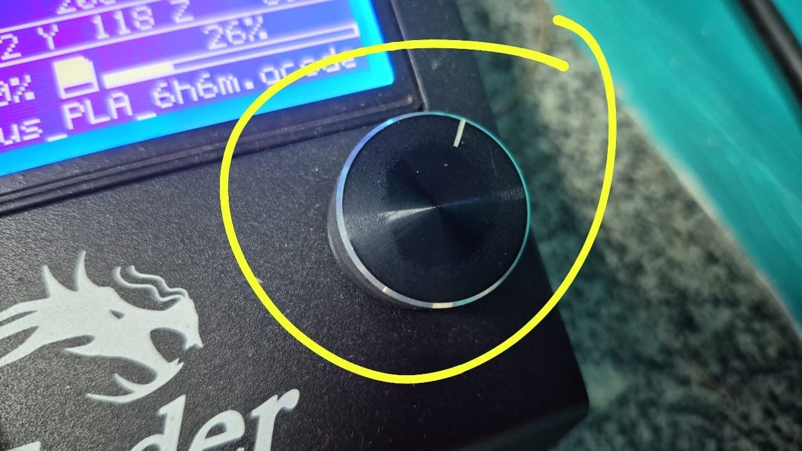
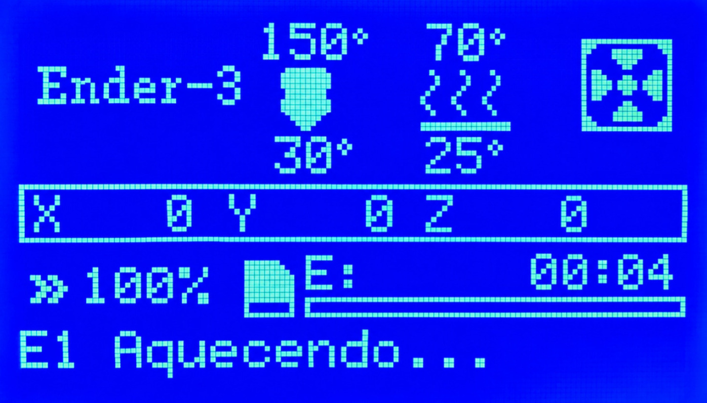
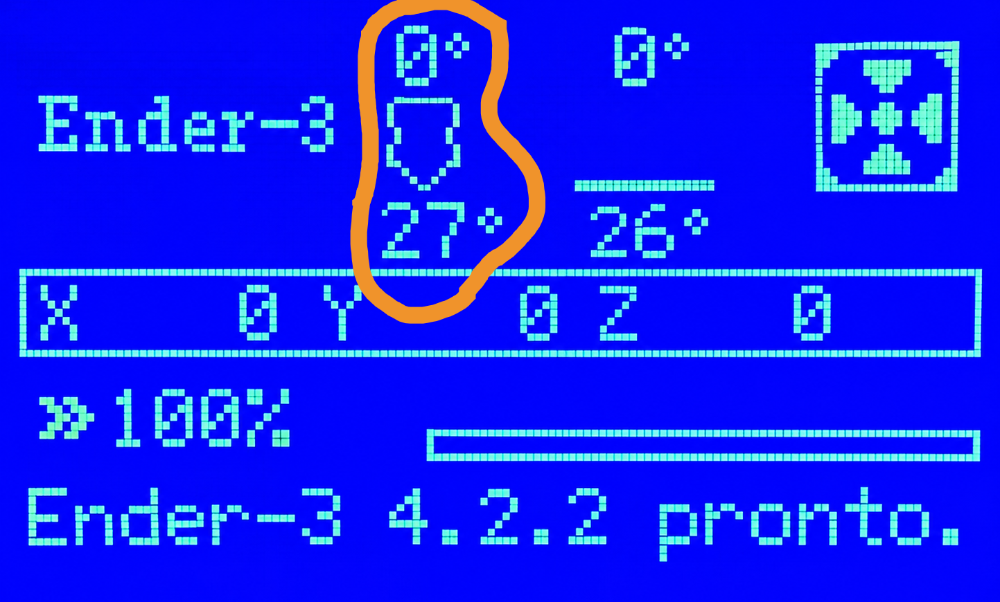
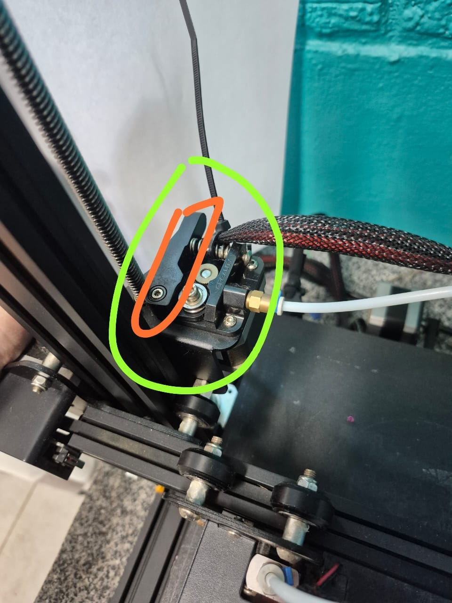
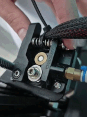
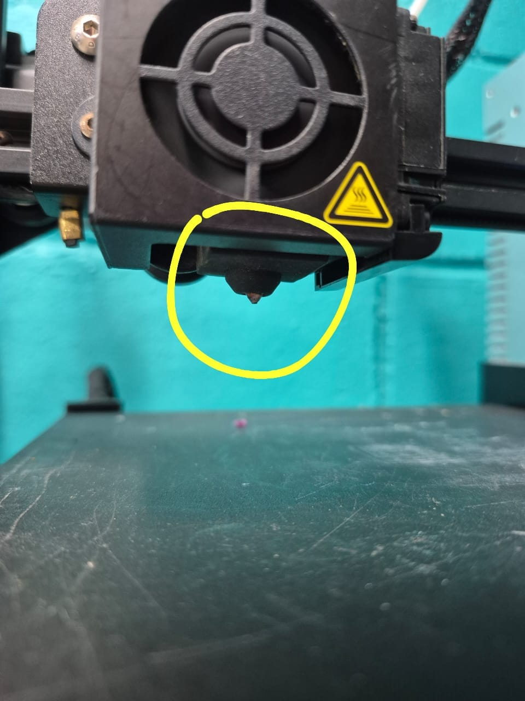
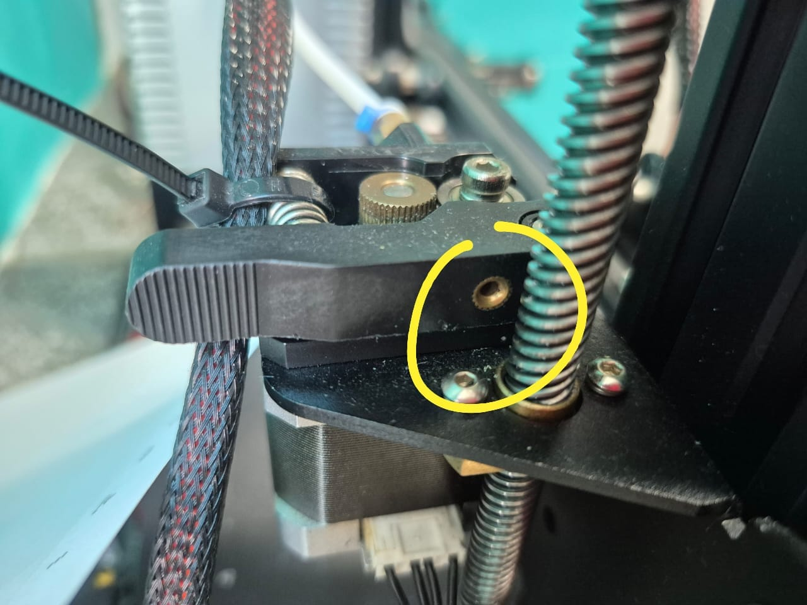

Conceitos essenciais
O filamento precisa amolecer no hotend para ser retirado sem força excessiva.
Libera a pressão das engrenagens para que o filamento possa ser movimentado manualmente.
Uma ponta solta pode cruzar outras voltas e formar um nó na próxima impressão.
O filamento absorve água do ar, o que pode prejudicar sua extrusão e acabamento.
1. Ligue a Ender 3
O interruptor fica na lateral direita da base. Observe primeiro a posição dele na visão ampla.

Pressione o lado marcado com I para ligar a máquina.

Aguarde a tela inicial de informações aparecer.

2. Aqueça antes de retirar o filamento
Pressione o encoder para abrir o menu. Gire até Temperatura e pressione novamente.

Entre em Pre-aquecer PLA. No submenu, mantenha Pre-aquecer PLA selecionado e pressione o encoder. O bico e a mesa começarão a aquecer.

Observe o indicador superior da área destacada. Antes de remover o filamento, aguarde a temperatura atual do bico chegar a 180 °C.

3. Remova o filamento
Localize a extrusora. Na fotografia, ela está circulada em amarelo; a trava que libera o filamento está marcada em vermelho.

- Com o bico aquecido, aperte completamente a trava da extrusora e mantenha-a pressionada.
- Sem soltar a trava, empurre o filamento alguns milímetros para a frente, até sair um pouco de material pelo bico.
- Continue pressionando a trava e puxe o filamento para trás com um movimento contínuo, retirando-o do guia.
- Solte a trava somente depois que a ponta do filamento sair da extrusora.



4. Enrole e prenda o filamento no carretel
- Segure a ponta para impedir que as voltas do carretel se soltem ou se cruzem.
- Gire o carretel e recolha o filamento mantendo as voltas organizadas.
- Introduza a ponta em um dos furos ou encaixes laterais do próprio carretel.
- Confirme que a ponta está presa e que nenhuma volta ficou solta.
Por que prender a ponta? Uma ponta solta pode passar por baixo de outra volta e formar um nó durante a próxima impressão.
5. Guarde o carretel protegido da umidade
O filamento absorve umidade do ar. Depois de prendê-lo no carretel:
- coloque o carretel em um saco bem fechado ou recipiente com tampa;
- adicione sílica dessecante em boas condições, sem contato com partes quentes;
- identifique o material e a cor;
- guarde em local seco, protegido do sol e de fontes de calor.
Não deixe o carretel aberto sobre a máquina depois do uso.
6. Aguarde o resfriamento e desligue
Pressione o encoder, entre novamente em Temperatura e ajuste Bocal e Mesa para 0. Isso encerra o pré-aquecimento. Volte à tela de informações e acompanhe a queda das temperaturas; não encoste para testar.
Quando o procedimento estiver concluído, as temperaturas estiverem caindo e a máquina não for mais usada, desligue-a pelo interruptor lateral. Mesmo desligadas, as partes podem continuar quentes por alguns minutos.